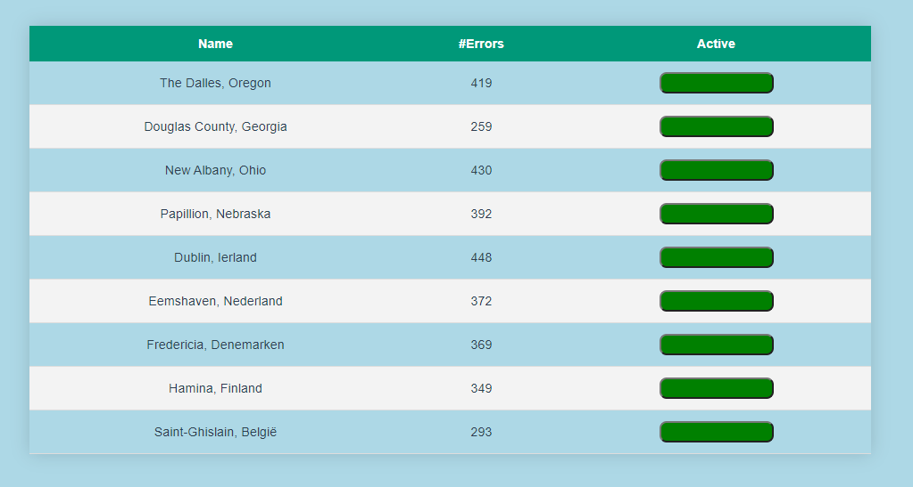

Hack The Future
Fellowship of code
Ik had mij samen met Jan Claeys ingeschreven voor Hack The Future. Een hackathon dit georganiseerd wordt door de Cronos groep. Aan deze hackathon nemen jaarlijks vele studenten deel en strijden ze allemaal voor de felbegeerde eerste plaats.
Vooraf
Tijdens het inschrijven konden we onze voorkeur doorgeven voor de challenges. Wij kozen om JavaScript, Java en C# door te geven. Wij hadden namelijk al deze technologieën uitgebreid gezien tijdens verschillende modules. Uiteindelijk kregen wij de JavaScript challenge toegewezen. Daarna moesten we onze front-end technologie kiezen. Wij kozen voor Vue.js omdat ik daar meer vertrouwd mee was dan Angular of React. Jan had wel al wat ervaring met React en Angular.
Door deze off-campus editie van HTF, kregen we een goodiebox toegestuurd met wat versnaperingen in. Ook zat er een blikje monster, sokken en een duo ticket voor de kinepolis in.
Opdracht
De opdracht bestond eruit om een api aan te spreken die beschadigde datacenters terug gaf. Het was dus de bedoeling om een soort dashboard te maken om deze datacenters weer te geven. Later was het ook de bedoeling om knoppen toe te voegen en datacenters in quarantaine te plaatsen. Je moest dus zo optimaal mogelijk datacenters kunnen afzonderen om zo weinig mogelijk errors te krijgen. Later moesten we ook proberen om een grafiek weer te geven van de meeste errrors en ook alle datacenters op een kaart weergeven. Tot slot konden we ook proberen om het in quarantaine zetten van datacenters automatisch te doen verlopen.
Onze oplossing
Ondanks onze uitgebreide voorkennis van Vue.js en JavaScript was de opdracht toch moeilijker dan verwacht. We hadden namelijk redelijk wat problemen om de api aan te spreken. Wij hadden een totaal andere oplossing in gedachten dan andere groepen, maar onze oplossing had een lange delay nodig om error code 429 “Too Many Request” te voorkomen. Om uiteindelijk een goede oplossing die werkt te verkrijgen hebben we lang moeten zoeken en dan was het kwaad al geschied. We hadden al een te grote achterstand op de andere groepen om nog voor de eerste plaats te kunnen strijden. Tijdens de presentatie was het ook goed duidelijk dat andere groepen het gemakkelijker hadden en zo een iets uitgebreidere oplossing hadden.
Ons resultaat van de hackathon:
Conclusie
Ondanks ons mindere eindresultaat was het toch een zeer toffe en leerrijke dag. Ik moet namelijk wat meer nadenken voor ik aan iets begin en dan hadden we misschien een iets uitgebreider resultaat. Jammer genoeg zaten we met een tijdslimiet en zo gebeuren fouten.